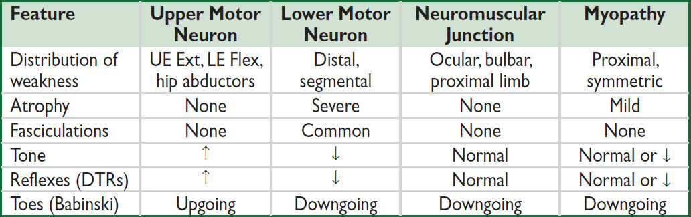
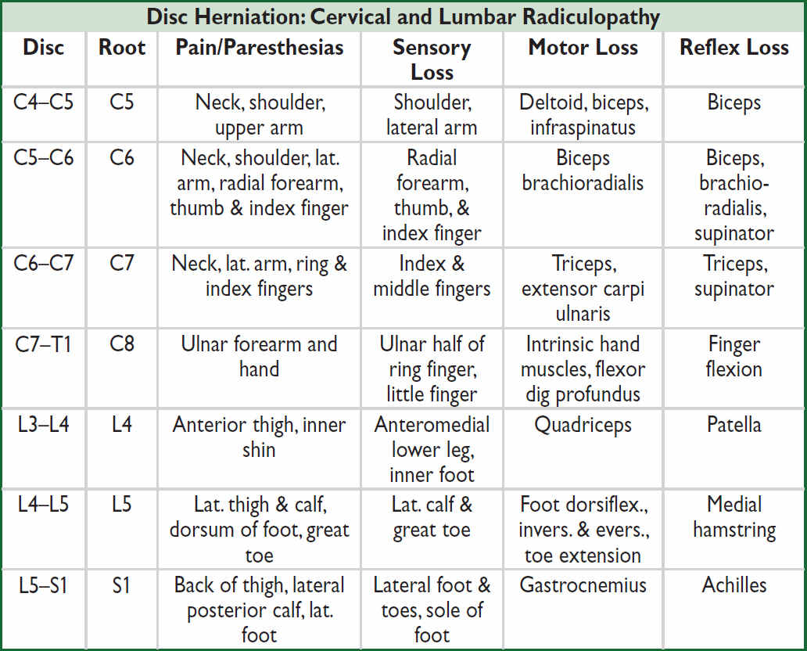

Consciousness/Arousal (description of patient & timing is most helpful)
• Arousal: spectrum from awake/alert → drowsy → stupor → coma. Terms vague & subjective, so most useful to describe response to increasing stimulation (eg, voice → noxious).
• Coma: lack of response to external stimuli. Degree formalized in Glasgow Coma Scale. Caused by focal lesions in brainstem (reticular activating system), thalamus, or diffuse dysfxn of both cerebral hemispheres. Mimics: locked-in synd., akinetic mutism, catatonia.
• Delirium/acute confusional state: altered attention & awareness, develops over hrs to days, often fluctuating, accompanied by cognitive Δs (eg, disorientation, memory loss, perceptual Δs); sometimes w/ sleep–wake dysregulation, autonomic Δs, emotionality
• Dementia: progressive cognitive impairment developing over mos to yrs; often affects memory, language, visuospatial, and executive function; attention often spared
Etiologies of Decreased Responsiveness |
|
1° Neurologic (usually with focal signs) |
Systemic (esp. in elderly or prior CNS injury) |
Vasc: ischemic stroke/TIA, ICH, VST, PRES, vasculitis, pituitary apoplexy Seizure: postictal, status, nonconvulsive Infxn: meningitis, encephalitis, abscess Trauma: TBI, concussion, diffuse axonal injury ↑ intracranial pressure: mass, edema, hydrocephalus, herniation Autoimmune/paraneoplastic enceph. Neurodeg: late-stage (eg, Alzheimer’s) or rapidly progressive (eg, CJD) |
Cardiac: global ischemia, HoTN, HTN enceph Pulmonary: ↓ PaO2, ↑ PaCO2 GI: liver failure, ↑ NH3 Renal: uremia, dialysis, ↓ or ↑ Na, ↓ or ↑ Ca Heme: TTP/HUS, DIC, hyperviscosity Endo: ↓ glc, DKA/HHNS, hypothyr., Addisonian ID: pneumonia, UTI, endocarditis, sepsis Hypothermia & hyperthermia Meds: anticholin., anti-hist., psychotrop., digoxin Toxins/withdrawal: EtOH, sedative, opiate, CO Psychiatric: catatonia, serotonin synd., NMS |
Initial evaluation
• History (witness & background crucial): tempo, premorbid sx (eg, focal neuro deficits, HA, infxn, pain, falls), medical conditions (eg, dementia, epilepsy, onc, cardiac, psych, infection/immune status), accompanied by head trauma, current meds (eg, sedatives, opioids, anticoag, anticonvulsants, immunosuppressants), drug/alcohol use
• General exam: VS, breathing pattern (eg, Cheyne-Stokes), tongue bite (seizure), nuchal rigidity (meningitis, SAH; do not test if c/f trauma/cervical spine fx), ecchymoses, rash, signs of head trauma (eg, Battle sign, raccoon eyes, hemotympanum, CSF rhinorrhea), asterixis, liver disease stigmata, embolic phenomena/endocarditis, s/s drug use
• Neuro exam (see below): perform off sedatives/paralytics if possible, look for focal deficits suggesting structural cause (eg, stroke, herniation), s/s of ↑ ICP (eg, HA, vomiting, papilledema, abducens nerve palsy, unilateral dilated pupil, ↑ BP/↓ HR, fixed downgaze)
Neuro Exam in Patients with Decreased Responsiveness |
|
Mental status |
Arousal (behavioral response to ↑ intensity of stimulation, GCS) |
Cranial nerves |
Pupils: pinpoint → opiates, pontine lesion; midposition & fixed → midbrain lesion; fixed & dilated → severe anoxic injury, herniation, anti-cholin. Extraocular movements / vestibulo-ocular reflex tests: Oculocephalic maneuver (“doll’s eyes”): nl = eyes move opposite head movement (do not test if possible cervical spine trauma) Vestibular (cold) caloric stimulation: in coma, nl = eyes move slowly to lavaged ear, then quickly away (do not test w tymp memb perf) Corneal reflex, facial grimace to nasal tickle Gag & cough reflexes (with ET tube manipulation if necessary) |
Motor |
Tone, spont movements, flexor/extensor posturing of arms/legs, strength |
Sensory |
Response to painful stimuli: purposeful vs. reflexive/posturing |
Reflexes |
Deep tendon reflexes, Babinski, “triple” flexion (ankle, knee, & hip flexion to noxious stimulation → not suggestive of intact cortical function) |
Glasgow Coma Scale (sum points from each of 3 categories to calculate score) |
|||
Eye Opening |
Best Verbal Response |
Best Motor Response |
Points |
|
|
Follows commands |
6 |
|
Oriented |
Localizes pain |
5 |
Spontaneous |
Confused |
Withdraws from pain |
4 |
To voice |
Inappropriate words |
Flexor posturing |
3 |
To painful stimuli |
Unintelligible sounds |
Extensor posturing |
2 |
None |
None (intubated = 1T) |
None |
1 |
• Empiric antibiotics if c/f CNS infection: vancomycin/CTX, consider acyclovir and ampicillin
• Immobilization of C-spine if concern for cervical trauma
• Thiamine 100 mg IV → dextrose 50 g IVP (this order to prevent exacerbation of Wernicke’s)
• If opiates suspected: naloxone 0.01 mg/kg; if BDZ suspected, consider flumazenil 0.2 mg IV
• If concern for ↑ ICP ↑ herniation: ↑ head of bed; osmotherapy w/ mannitol or hypertonic saline; ↑ ventilation; dexamethasone for tumor edema; c/s neurosurgery (? decompress)
Diagnostic studies (Lancet 2014;384:2064)
• All patients: check fingerstick glucose, electrolytes, BUN/Cr, LFTs, CBC, tox screen, U/A
• Based on clinical suspicion:
Labs: NH3, TSH, cort stim, B12, ABG, HIV, ESR, ANA, TPO/anti-TG, BCx, drug levels
Imaging: head CT, then MRI; CTA if c/f stroke/SAH; radiographs to r/o C-spine fracture
Lumbar puncture to r/o meningitis, SAH, or noninfectious inflammation (eg, autoimmune)
EEG to evaluate for nonconvulsive seizures, toxic/metabolic encephalopathy
Further treatment of delirium (NEJM 2017;377:1456)
• Treat underlying acute illness, eliminate precipitating factors, & provide supportive care
• Address sensory & cognitive impairments (frequent reorientation, glasses/hearing aids, etc.)
• Decrease/prevent infection/restraints if possible, remove lines/catheters if unnecessary
• Promote good sleep: reduce noise & nighttime interventions; sedative med if necessary
• Meds: consider antipsychotics (but neither haloperidol nor ziprasidone ↓ delirium duration in ICU Pts; NEJM 2018;379:2506); avoid benzos except in EtOH withdrawal or seizures
ANOXIC BRAIN INJURY (at risk if ≥5 min cerebral hypoxia)
Initial evaluation (Circulation 2010:S768)
• Neuro exam: arousal/verbal, eyes & other cranial nerves, motor response to pain
• Imaging: CT usually not informative w/in first day after arrest, but should be done prior to initiating targeted temp management if patient found down or has had head trauma
Targeted temperature management (Circulation 2015;132:2448)
• Indications: comatose (GCS <8) w/in 6 h after cardiac arrest (not isolated resp. arrest). Beneficial in both VT/VF and PEA/asystole. Also consider 6–12 h post-arrest.
• Relative contraindic.: major head trauma, coagulopathy/bleeding, major surgery <14 d; CV instability no longer viewed as contraindication, but rather something to be managed.
• Target temp: 32–37.8°C × ≥24 h, rewarm, then maintain normothermia (37°C) for ~24 hrs.
• Initial studies showing benefit w/ 32–34°C, but subsequent studies showed ≈ outcomes for 36°C or 37.8°C vs. 33°C (NEJM 2013;369:2197 & 2021;384:2283)
• ∴ prevent hyperthermia, but need for hypothermia vs. normothermia unclear
• Method: ice packs to head/neck/torso; cooling blankets; cooling vest or endovascular catheter. Goal to achieve target temp <6 h. Pts should be sedated/paralyzed while cooled. Start rewarming 24 h after cooling initiated (rewarm ≤0.5°C per h).
• Can consider higher MAP goal of >70 mmHg
• Complications
Dysrhythmias (brady most common): if significant or hemodynamic instability → rewarm
Coagulopathy (can receive lytics, GP IIb/IIIa inhibitors, etc.); monitor PT & PTT
Infection: monitor surveillance blood cultures during cooling
Hyperglycemia during cooling, hypoglycemia w/ rewarming; stop insulin if glc <200 mg/dL
Hypokalemia during cooling, hyperkalemia w/ rewarming; keep K 4–5 mEq/L
Ongoing evaluation
• Neuro exam: daily focus on coma exam. No exam finding is reliable <24 h or on sedation. Should be off sedation for adequate time (depends on dose, duration, Pt’s metabolism).
• Labs: daily CBC, PT/PTT, electrolytes. Serum neuron-specific enolase (NSE) on days 1–3.
• Imaging: noncontrast CT 24 h after arrest; if unrevealing, consider MRI around days 3–5
• EEG: consider in all to exclude seizures; greatest risk during rewarming. Unreactive background or abundant rhythmic or episodic discharges may convey poor prognosis.
• Somatosensory evoked potentials (SSEP): helpful for prediction of poor outcome if cortical responses are absent bilaterally; perform 48 h after arrest (72 h if cooled)
Prognosis (Nat Rev Neuro 2014;10:190)
• Prior to cooling era, poor prognosis at 72 h if absent pupillary & corneal reflexes and no motor response to pain; or absent SSEPs at 48 h. With cooling, unclear if prior measures as reliable. Overall ~12% survive to hosp. d/c; VT/VF 25-40%, PEA ~10%, asystole ~2%.
• Prognosis requires multifactorial assessment based on age, exam, comorbidities, ancillary data. Poor signs: absent brainstem reflexes, Rx-resistant myoclonus, EEG w/ absent background/reactivity, NSE >101, MRI w/ diffuse hypoxic injury. If doubt, err on more time.
Definitions & clinical manifestations (Epilepsia 2017;58:522)
• Seizure: transient neurologic symptoms due to excessive synchronous neuronal activity; may be provoked by a reversible factor lowering the seizure threshold, or unprovoked
• Epilepsy: ≥2 unprovoked seizures occurring >24 h apart or 1 unprovoked seizure w/ ≥60% probability of further seizures over the next 10 y (see below for prognostication)
• Generalized seizures (involves brain diffusely)
Tonic-clonic (grand mal):
Aura (sec to mins): premonition with paresthesias, focal motor contractions, abnormal smells/tastes, fear, depersonalization, déjà vu, autonomic changes, automatisms
Ictal period (sec to mins): lateral gaze and head deviation, tonic contraction of muscles → intermittent relaxing and tensing of muscles, tongue biting, urinary incontinence, pooling of secretions
Postictal period (mins to h): slowly resolving period of confusion, disorientation, and lethargy. May be accompanied by focal neurologic deficits (Todd’s paralysis).
Absence (petit mal): transient lapse of consciousness w/o loss of postural tone, usu pedi
Myoclonic (infantile spasms & juvenile myoclonic epilepsy): sudden, brief contraction
• Focal seizures (involves discrete brain area, often associated with a structural lesion)
w/o impaired awareness: focal motor/autonomic sx (formerly “simple partial seizure”) or focal sensory/psychic symptoms (eg, aura)
w/ impaired awareness: dyscognitive features (formerly “complex partial seizure”)
evolving to bilateral, convulsive seizure (formerly “secondarily generalized seizure”)
• Status epilepticus: continuous convulsive seizure ≥5 min or >2 seizures w/o resolution of postictal encephalopathy; life threatening
• Nonconvulsive status epilepticus: alteration of awareness (ranging from confusion to coma) w/o motor manifestations of seizure; dx with EEG
Differential diagnosis
• Syncope (Lancet Neurol 2006;5:171)
Feature |
Seizure |
Syncope |
Aura |
Unusual behavior/automatisms |
Diaphoresis, nausea, tunnel vision |
Convulsions |
Variable duration |
Usually <10 sec |
Postictal state |
Yes; can be ≥30 min |
None or short |
Other clues |
Tongue biting, incontinence |
Skin pallor, clamminess |
• Nonepileptic seizure (aka “psychogenic”): may see side-to-side head turning, asymmetric large-amplitude limb movements, hip thrusting, diffuse shaking w/o LOC, crying/talking during event; diagnosis requires spell capture on EEG with no EEG correlate
• Other: metabolic disorders (eg, alcoholic blackouts, hypoglycemia), migraine, TIA, transient global amnesia, narcolepsy (cataplexy), nonepileptic myoclonus, tics, asterixis
Etiologies of seizures (vary strongly by age)
• Without focal lesion: genetic predisposition to seizures or epilepsy syndrome; alcohol withdrawal, illicit drugs; meds (eg, β-lactams, bupropion, fluoroquinolones, tramadol, MNZ, meperidine, CsA); electrolyte (hyponatremia) & other metabolic (eg, uremia, liver failure, hypoglycemia); autoimmune encephalitis, idiopathic (~60%)
• With focal lesion: tumor, trauma, stroke, subdural hematomas, posterior reversible encephalopathy syndrome, mesial temporal sclerosis, abscess, focal cortical dysplasia
Clinical evaluation (JAMA 2016;316:2657)
• History key in differentiating seizure from other causes of transient loss of consciousness. Must talk to witnesses. Ask about prodrome, unusual behavior before spell, type & pattern of abnl movements incl. head turning & eye deviation (gaze preference usually away from seizure focus), loss of responsiveness.
• Recent events: illnesses/fevers, head trauma, sleep deprivation, stressors
• PMH: prior seizures or ⊕ FHx; prior CNS infection, stroke or head trauma; dementia
• Medications (new or noncompliance), alcohol and illicit drug use
• General physical exam should include the skin, looking for neuroectodermal disorders (eg, neurofibromatosis, tuberous sclerosis) that are a/w seizures
• Neurologic exam should look for focal abnormalities → underlying structural abnormality
Diagnostic studies (Neurology 2007;69:1996)
• Lab: full lytes, BUN, Cr, glc, LFTs, CK, lactate, tox screen, AED levels (except levetiracetam level rarely useful unless ? noncompliance), illicit drug screen, prolactin if drawn immediately after event (w/in 10–20 min)
• Routine EEG (~30 min): may help determine risk of seizure recurrence after 1st-time unprovoked seizure. Caveat: interictal EEG nl in 50% of Pts w/ epilepsy, and interictal epileptiform activity (spikes or sharp waves) seen in up to 2% of nl population; EEG w/in 24 h, sleep deprivation and repeated studies ↑ dx yield of EEG.
• Long-term EEG monitoring (hrs to days): if suspicion for nonconvulsive status or non-epileptic seizures; video monitoring may help w/ nonepileptic seizures
• MRI to r/o structural abnormalities; ↑ Se w/ fine coronal imaging of frontal & temporal lobes
• LP (if no space-occupying lesion on imaging): if suspect meningoencephalitis (eg, fever, ↑ WBC, nuchal rigidity), autoimmune encephalitis, and in all HIV ⊕ Pts
Treatment (Neurology 2015;84:1705; Lancet 2015;385:884)
• Treat any underlying precipitants, including CNS infections, intoxication, withdrawal, discontinuing provoking med, etc.
• Antiepileptic drug (AED) Rx usually reserved for Pts w/ ≥2 unprovoked seizures, single seizure w/ high risk of recurrence (see below), or underlying structural abnormality. Provoked seizures generally treated by addressing underlying cause; consider AED if status epilepticus on presentation, focal neuro exam, postictal Todd’s paralysis.
• After 1st unprovoked sz, weigh risks of recurrence vs. AED. ↑ risk of recurrence if abnl EEG, MRI, or nocturnal sz. If EEG & MRI nl → 65% sz-free at 5 y (Lancet Neurol 2006;5:317).
• Immediate treatment w/ AED after 1st unprovoked seizure ↓ risk of recurrence over 2 y, but does not Δ long-term prognosis
• If AED Rx indicated, choice dependent on type of seizure, side effects, cost, mechanism of elimination (if hepatic or renal insufficiency), teratogenesis, and drug interactions
• Introduce gradually, monitor carefully
• Individual state laws mandate seizure-free duration before being allowed to drive
Antiepileptic Drugs and Side Effects |
|||
Medication |
Avg Daily Dose |
Common Side Effects |
|
Systemic |
Neurologic (all: sedation) |
||
Carbamazepine |
400–1600 mg |
Aplastic anemia, ↓ WBC, rash, hepatotoxicity, ↓ Na |
Diplopia, confusion, ataxia |
Ethosuximide |
500–1500 mg |
Rash, BM suppression |
Behavioral Δs |
Gabapentin |
900–3600 mg |
GI upset, wt gain |
Nystagmus, ataxia |
Lacosamide |
200–400 mg |
Prolonged PR interval |
Dizziness, diplopia |
Lamotrigine |
100–300 mg |
Rash (Stevens-Johnson) |
Tremor, HA, blurred vision, insomnia |
Levetiracetam |
1000–3000 mg |
GI upset (rare) |
Emotional lability |
Oxcarbazepine |
600–2400 mg |
Hyponatremia, rash |
Diplopia, dizziness |
Phenobarbital |
50–200 mg |
Rash |
Cognitive slowing |
Phenytoin |
200–400 mg |
Gum hyperplasia |
Dizziness, ataxia |
Topiramate |
100–400 mg |
↓ wt, hypohidrosis, kidney stones, glaucoma, met acid |
Cognitive slowing |
Valproic acid |
500–2500 mg |
Hepatotox, ↑ NH3, ↑ wt, ↓ hair |
Tremor |
Zonisamide |
200–600 mg |
↓ wt, hypohidrosis, nephrolith |
Cog slowing, fatigue |
(NEJM 2008;359:166; Lancet Neurol 2011;10:446)
Status epilepticus (Epilepsy Curr 2016;16:48)
• ABCs: vital signs, oral airway or endotracheal intubation. Place Pt in semiprone position to ↓ risk of aspiration. Obtain IV access. Give thiamine, dextrose, IV normal saline.
• STAT POC glc, metabolic panel, CBC, tox screen, CK, lactate, AED levels, consider head CT, LP
• Start standing AED after loading dose.
Treatment of Status Epilepticus |
|||
Time (min) |
Antiepileptic |
Dosing Regimen |
Typical Adult Dose |
5–20 |
Lorazepam or Midazolam or Diazepam* |
0.1 mg/kg IV>IM 0.2 mg/kg IM 0.2 mg/kg IV or 0.2–0.5 mg/kg PR |
2–4 mg IV pushes, up to 8 mg Up to 10 mg x1 Up to 10 mg IV; up to 20 mg PR |
20–40 |
Phenytoin or Fosphenytoin or Valproate or Levetiracetam |
20 mg/kg 20 mg PE/kg 40 mg/kg 20–40 mg/kg |
1.0–1.5 g IV (max 1.5 g) over 20 min 1.0–1.5 g PE IV over 5–10 min 1.0–1.5 g IV (max 3 g) over 5–10 min 2g IV (max 4.5 g) over 10–15 min |
|
Subsequent steps mandate intubation, EEG monitoring, and ICU admission |
||
40–60 |
General anesthesia with continuous midazolam, pentobarbital, or propofol |
||
PE, phenytoin equivalents. *Consider PR diazepam if no IV access and IM midazolam is contraindicated.
Clinical manifestations
• Minor withdrawal: 6–48 h after last drink; mild anxiety, tremulousness, HA
• Withdrawal seizures: typically w/in 48 h after last drink; if unRx’d, 1/3 → delirium tremens
• Alcoholic hallucinosis: isolated hallucinations (typically visual) 12–48 h after last drink
• Delirium tremens (DT): disorientation, agitation, hallucinations, ↑ HR & BP, fever, diaphoresis; begins 48–96 h after last drink, lasts 5–7 d
• Consider other dx: CNS infxn or bleed, sz, drug O/D, co-ingestions, acute liver failure, GIB
• Ten-item scale (CIWA-Ar) used to assess and manage alcohol withdrawal (see Appendix)
Treatment (J Addict Med 2020;14:1)
• Benzodiazepines:
Drug: diazepam preferred (long-acting; ↓ risk of recurrent withdrawal), lorazepam (short-acting), chlordiazepoxide, oxazepam (no active metab; good if cirrhosis)
Dosing: typically start w/ diazepam 10–15 mg IV q10–15min (or lorazepam 2–4 mg IV q15–20min) until appropriate sedation achieved, then titrate to CIWA-Ar scale, evaluating q1–4 h until score <10 × 24 h, then q4–8 h × 24 h, and if stable, then q4 h
• Phenobarbital: adjunctive use in severe withdrawal may ↓ hospital stay, mech ventilation
• Avoid βB (mask sx)
• Mechanical restraints as needed until chemical sedation achieved
• Volume resuscitation as needed; thiamine then glc to prevent Wernicke’s encephalopathy (ataxia, ophthalmoplegia, short-term memory loss); replete K, Mg, PO4
• Ppx: if min sx or asx (ie, CIWA score <8) but prolonged heavy EtOH consumption or h/o withdrawal seizures or DTs → chlordiazepoxide 25–100 mg q6 h × 24 h, then taper
Differential diagnosis
• Includes a variety of sx. Disequilibrium: sense of imbalance, gait disturbance; vertigo: perception of spinning; near syncope: lightheadedness due to cerebral hypoperfusion.
• Dizziness can occur with PNS & CNS injury (vide infra) or in hematologic (eg, anemia), CV (eg, arrhythmia, orthostasis) & endocrine (eg, ↓ glc, thyroid) disorders, or due to meds
• Vertigo Ddx:
Peripheral (inner ear/CNVIII)
BPPV: dislodged canaliths in semicircular canal; episodic rotatory vertigo (<1 min episodes), triggered by changes in position; Rx: Epley/BBQ roll maneuver
Meniere’s disease: ↑ endolymphatic pressure in inner ear; episodic rotatory vertigo (min-hrs), N/V, aural fullness, hearing loss, tinnitus; Rx: diuretics, ↓ salt
Vestibular neuritis: sudden-onset w/ gait ataxia; severe for 24–48 hrs followed by gradual improvement, often post-viral; w/ hearing loss = labyrinthitis
Central (brainstem/cerebellum)
Posterior circulation stroke/TIA: “5 Ds” of dizziness, diplopia, dysarthria, dysphagia, dystaxia; sudden onset (resolves after mins in TIA, persists in stroke)
Other: migraine, Chiari, epilepsy, MS, tumors, drugs/meds, concussion
Initial evaluation
• Hx: ask open-ended questions (description by Pt may be unreliable), pace of illness, episodic vs. chronic, meds, other sx of posterior circ including diplopia, dysarthria, ataxia
Exam |
Peripheral Causes |
Central Causes |
Orthostatics |
⊕ in orthostatic syncope |
Typically absent |
Eye movements |
Nystagmus unidirectional if present, never vertical, suppressed w/ fixation |
Nystagmus bidirectional, often vertical, not suppressed w/ fixation |
Hearing |
May be impaired in some peripheral causes of vertigo |
Normal (rarely unilat. hearing loss in AICA-territory stroke) |
Coord./gait |
Normal |
May reveal limb, trunk, gait ataxia |
• HINTS testing (Stroke 2009;40:3504)
Head Impulse test: Pt fixates on examiner’s nose during rapid passive head turn of ~10–20°; presence of “catch-up saccade” supports peripheral dysfunction to side of turn
Nystagmus (see table above)
Test of Skew: vertical refixation saccade on alternating eye cover supports central cause
• Dix-Hallpike test: Pt sitting → lying back w/ 45º head tilt; elicits rotatory nystagmus after delay of secs; fatigues if repeated; ⊕ suggests BPPV w/ affected ear down
• Supine Roll test: nystagmus elicited by head turn while patient supine; when ⊕ suggests BPPV w/ affected ear down (lateral canal, 8% of cases)
• Studies: orthostatic VS, basic labs, ECG; if concerning s/s HINTS → MRI brain
• Rx: Epley for BPP; vestib. PT; anti-hist., sedative or anti-emetic, steroid for vestib. neuritis
ISCHEMIC STROKE
Etiologies
• Embolic: artery → artery, cardioembolic (~30% due to AF; NEJM 2014;370:2478), paradoxical
• Thrombotic: large vessel (atherosclerosis) vs. small vessel (“lacunar,” lipohyalinosis of small arteries, often related to smoking, HTN, hyperlipidemia, & DM)
• Other: hypoperfusion, dissection, vasculopathy (vasculitis, radiation), vasospasm, hypercoag, hematologic (sickle cell, hyperviscosity), endocarditis, venous
Clinical manifestations
• Timing: embolic → sudden onset; thrombotic → may have stuttering course
Stroke Syndromes by Vascular Territory |
|
Artery |
Deficits |
ICA → Ophth |
Amaurosis fugax (transient monocular blindness) |
ACA |
Hemiplegia (leg >arm), abulia, urinary incontinence, primitive reflexes |
MCA |
Hemiplegia (face & arm >leg); hemianesthesia; homonymous hemianopia Aphasia if dom. hemisphere: sup. div. → expressive; inf. div → receptive Apraxia & neglect if nondom. hemisphere. |
PCA |
Macular-sparing homonymous hemianopia; alexia w/o agraphia Thalamic syndromes with contralateral hemisensory disturbance |
Vertebral, PICA |
Wallenberg syndrome = numbness of ipsilateral face and contralateral limbs, diplopia, dysarthria, dysphagia, ipsilateral Horner’s, hiccups |
Basilar |
Pupillary Δs (midbrain=dilated, pons=pinpoint), long tract signs (quadriplegia, sensory loss), CN abnl, cerebellar dysfxn. Top of basilar → ”locked in” synd. |
Cerebellar |
Vertigo, N/V, diplopia, dysarthria, nystagmus, ipsilateral limb ataxia |
Lacunar (arterioles) |
5 major syndromes: pure hemiplegia, pure hemianesthesia, ataxic hemiparesis, dysarthria + clumsy hand, mixed sensorimotor |
Transient ischemic attack (TIA)
• Sudden deficit due to cerebral ischemia; no stroke on imaging; most resolve in <1 h
• Ddx: seizure, migraine, hypoglycemia, amyloid spells, TGA, anxiety
• Risk of subsequent stroke ~2% by 1 wk (NEJM 2016;374:1533). Can stratify based on ABCD2: Age ≥60 y (+1); BP ≥140/90 (+1); Clin features: unilat. weak. (+2), speech impair. w/o weakness (+1); Duration ≥60 (+2) or 10–59 min (+1); DM (+1)
Physical exam
• General: murmurs, carotid & subclavian bruits, peripheral emboli, endocarditis stigmata
• Neurologic exam, NIH stroke scale (http://www.stroke.nih.gov/documents/NIH_Stroke_Scale_508C.pdf)
Acute workup
• Electrolytes, Cr (relevant for contrast); glc, CBC, coags (see exclusion criteria for lysis)
• Cardiac biomarkers, 12-lead ECG, tox screen
• STAT CT to r/o ICH prior to lysis (Se ICH ≈ MRI, CT faster). Early signs of stroke: hyperdense artery, loss of gray-white differentiation, edema, insular ribbon. CT can be nl initially, & not Se for small or brainstem stroke. CTA if possible endovascular Rx.
Acute treatment of ischemic stroke (Stroke 2019;50:e344; JAMA 2021;325:1088)
• Thrombolysis (IV): tPA 0.9 mg/kg (max 90 mg), w/ 10% as bolus over 1 min, rest over 1 h
consider if onset w/in 4.5 h, Ø contraindic. (incl. current/prior ICH; head trauma or stroke w/in 3 mo; intracranial neoplasm, AVM or aneurysm; recent intracranial/intraspinal surgery; active internal bleeding; noncompressible arterial puncture; ↑ BP; multilobar infarct; plt <100k, INR >1.7, on Xa inhib, PTT >40, glc <50)
0–3 h: 12% absolute ↑ in good neuro outcome (min/no disability), 5.8% absolute ↑ in ICH, trend toward 4% absolute ↓ mortality
3–4.5 h: 7.4% absolute ↑ in good neuro outcome, 1.8% absolute ↑ in ICH, Ø mortality benefit (nb, trial excluded patients with previous strokes + DM)
Data for tenecteplase (TNK), Rx up to 9 h or unknown timing, and for MRI imaging to guide Rx (NEJM 2018;378:1573 & 379:611; 2019;380:1795; Lancet 2020;396:1574)
• BP: lower to <185/110 to consider lysis; if lyse keep <180/105 × 24 h (consider IV labetalol or nicardipine), o/w permissive HTN unless >220/120 or sx; if sx HoTN consider vasopressors
• Initiate ASA w/in 24–48 h; avoid anticoagulation w/in 24 h of lysis; see below for long-term Rx
• Cerebral edema → herniation: 1–5 d post large MCA or cerebellar strokes, ↑ risk in young. Elevate HOB >30°; mannitol ± 23% NaCl. Hemicraniectomy ↓ mortality (NEJM 2014;370:1091). Neurosurgery consult in select MCA and all large cerebellar strokes.
• Endovascular thrombectomy if w/in 6 h of sx onset, pre mRS 0-1, occlusion in ICA or MCA, NIHSS ≥6, ASPECTS ≥6 (CT-based likelihood of recovery). May extend to 6–24 h if mismatch between infarct size and clinical deficits or stroke penumbra (NEJM 2018;378:11 & 708).
Workup to assess for etiology/modifiable risk factors
• Cardiac: monitor for AF (inPt and extended outPt); TTE to r/o thrombus/veg, w/ bubble study to r/o PFO/atrial septal aneurysm if suspect embolic
• Vessel imaging: CTA or MRA head/neck; carotid U/S w/ Doppler if contraindic to CTA/MRA
• Labs: lipids, HbA1c, TSH, homocysteine, Lp(a), hypercoag w/u (if <65 y or cryptogenic stroke; ideally drawn before starting anticoag), ESR/CRP, blood cx if s/s systemic infection
• MRI helpful if dx of stroke unclear (esp. post circ) or to define stroke subtype, age, exact size
DWI bright/ADC dark = earliest finding in acute ischemia (~w/in mins, up to days)
T2-FLAIR: hyperintense w/in about 6 hrs, persists for wks; PWI differentiates irreversibly infarcted core vs. viable penumbra; T1 fat-sat (neck vessels) if suspicious for dissection
Secondary stroke prevention (Stroke 2021;52:e364)
• Antiplatelet therapy: different agents likely have similar efficacy
ASA ↓ death & repeat stroke; equal to warfarin in nonembolic stroke (NEJM 2001;345:1444)
clopidogrel: marginally superior to ASA, slightly ↑ ICH (Lancet 1996;348:1329)
P2Y12 (clopi or ticag) + ASA (vs. ASA alone): Rx for 1–3 mos in minor strokes or TIA w/ high ABCD2 → ↓ risk of ischemic stroke, ↑ ICH (NEJM 2018;379:215 & 2020;383:207). Rx for 90 d if stroke due to intracranial athero (NEJM 2011;365:993).
• Anticoagulation (AC): consider for AF (qv), cardiac/paradoxical emboli (except bacterial endocard); large extra-dural dissections; hypercoag; bridge to CEA in sx carotid stenosis
Hold off on AC in large strokes for ~2–4 wk given risk of hemorrhagic conversion
• Long-term SBP target <130/80 mmHg
• ↓ LDL-C (<< 70 mg/dL): ↓ recurrence w/ statin PCSK9i added to statin (NEJM 2017;376:1713)
• Carotid revascularization (NEJM 2013;369:1143)
CEA (if surgical morbidity & mortality ≤6%) indicated for:
sx stenosis 70–99% (benefit ↑ for males, >75 y, ≤2 wk from stroke) → 65% ↓ RR of repeat stroke, slight benefit for 50–69% stenosis (NEJM 1991;325:445; Lancet 2004;363:915)
asx stenosis 70–90%, <79 y: 50% ↓ RR of repeat stroke (Lancet 2010;376:1074)
Stenting: c/w CEA, ↑ periprocedural stroke (esp. in elderly) & ↓ MI (but many asx); subseq. ≈ rates of fatal or disabling stroke, but ↑ non-disabling stroke (Lancet 2021;398:1065)
Patent foramen ovale (PFO; in ~25% of population) (NEJM 2005;353:2361)
• ↑ stroke risk: ≥4 mm separation, R→L shunting at rest, ↑ septal mobility, atrial septal aneurysm
• Risk scores assess likelihood stroke related to PFO. RoPE score: age (+1 for each decade <70); cortical stroke on imaging (+1); HTN, DM, h/o stroke/TIA, smoker (+1 for each absent risk factor). PASCAL classification also includes large shunt or atrial septal aneurysm.
• If PFO & stroke/TIA: no benefit of warfarin vs. ASA, but consider if high risk for or has DVT/PE
• Closure ↓ recurrence by ≥50%, with magnitude of benefit dependent on risk classification (RoPE ≥7 or PASCAL classification of possible or probable) (JAMA 2021;326:2277)
INTRACRANIAL HEMORRHAGE (ICH)
Classification by location
• Hemorrhagic strokes: intraparenchymal hemorrhage (IPH) & subarachnoid hemorrhage (SAH)
• Other ICH: epidural hematoma (EDH) & subdural hematoma (SDH)
Etiologies
• AVM, aneurysm, cerebral venous sinus thrombosis → IPH or SAH
• HTN (basal ganglia, cerebellum, brainstem), cerebral amyloid (lobar), tumor (esp. w/ melanoma, renal cell CA, chorio-CA, thyroid CA) → IPH
• Trauma → all locations (nb, IPH or SAH caused by trauma technically not a stroke)
Clinical manifestations (Lancet 2017;389:655 & NEJM 2017;377:257)
• ↓ consciousness, N/V, HA, progressive focal neurologic deficits
• SAH: thunderclap HA, onset w/ exertion; nuchal pain/rigidity; LOC. EDH: initial lucid interval.
Workup (Acad Emerg Med 2016;23:963)
• STAT CT brain, angio (CT-A or conventional) if suspicious for vascular source
• ? LP for xanthochromia if no evid of ICH on CT (although ⊖ LR 0.01) & suspicious for SAH
• Coags (PT, PTT, INR)
Management (Crit Care Med 2016;44:2251; JAMA 2019;321:1295)
• Reverse coagulopathy, INR <1.4. Plt >100k, no need for plt tfn if on antiplt Rx (? if ↑ ICH), DDAVP if uremic. 2–3 mo after recovers, can restart antiplt mono Rx (Lancet 2019;393:2013).
• BP control w/ art line, nicardipine or labetalol gtt. SBP goal <140 for 1st 24 h, then <160 (NEJM 2013;368:2355 & 2016;375:1033), though BP goals controversial (NEJM 2016;375:1033)
• SAH: endovasc coiling vs. surg clipping (depends on location, comorbid.; Lancet 2015;385:691) of aneurysm/AVM; nimodipine to ↓ risk of vasospasm (monitor w/ TCDs), seizure Ppx
• Surg evac: EDH; SDH if >1 cm or rapid ↑, Rx-resistant epilepsy; IPH: no obvious benefit
• Venous sinus thrombosis: start anticoagulation, manage ↑ ICP and seizures as needed

PERIPHERAL NEUROPATHIES
Etiologies based on presentation
• Mononeuropathy (1 nerve): acute → trauma; chronic → entrapment, compression, DM, Lyme. Common: median nerve (carpal tunnel); ulnar (elbow or wrist); radial (spiral groove); com. peroneal (fibular head w/ leg crossing); lat. femoral cutan. (inguinal lig)
• Mononeuropathy multiplex (axonal loss of multiple, noncontig. nerves): vasculitic synd. (eg, PAN, EGPA, GPA, SLE, RA, Sjögren’s, cryo, HCV), DM, Lyme, HIV, leprosy, hereditary neurop. w/ pressure palsies, infiltrative (sarcoid, lymphoma, leukemia)
• Polyneuropathy (multiple symmetric nerves, generally length dependent): 30% idiopathic;
W/ autonomic features: DM, EtOH, paraneoplastic, B12 def, amyloid, chemo, 1° dysauto
Painful (small fiber nerves): DM, EtOH, amyloid, chemo, sarcoid, heavy metals, porphyria
Demyelinating. Acute: AIDP (Guillain-Barré), diphtheria. Subacute: meds (taxanes), paraneoplastic. Chronic: idiopathic, DM, CIDP, anti-MAG, HIV, hypothyroidism, toxins, paraproteinemia, hereditary (eg, CMT).
Axonal. Acute: acute motor axonal neuropathy, porphyria, vasculitis, uremia, critical illness. Subacute: EtOH, sepsis, paraneoplastic, meds (cisplatin, paclitaxel, vincristine, INH, ddI, amio). Chronic: DM, uremia, lead, arsenic, HIV, paraproteinemia, B12 defic.
Clinical manifestations
• Weakness, fasciculations, cramps, numbness, dysesthesias (burning/tingling), allodynia
• ↑ Autonomic dysfxn (orthostasis, constipation, urinary retention, impotence, abnl sweating)
• Depressed or absent DTRs (may be normal in small fiber neuropathy)
Diagnostic studies
• Distal symmetric polyneuropathy: CBC, lytes, BUN/Cr, HbA1C, B12, ESR, SPEP + IF
• EMG/NCS (often no change in 1st 10–14 d or in small-fiber neuropathy)
• Based on H&P: LFTs, celiac Abs, ANA, anti-Ro/La, HIV, Cu, Lyme, RPR, UA, UPEP+IF, ACE, ANCA, heavy metals, LP (AIDP/CIDP), cryo, paraneoplastic Abs, genetic testing. Autonomic testing/skin bx (small fiber), nerve bx (mononeuropathy multiplex), fat pad bx (amyloid).
• MRI if possible radiculopathy or plexopathy (after EMG)
Pharmacologic treatment of neuropathic pain (Lancet Neurol 2015;14:162)
• Gabapentin, pregabalin, TCAs (nortriptyline, amitriptyline), SNRIs (duloxetine, venlafaxine)
• 2nd line: tramadol, topicals (lido, capsaicin); 3rd line: nerve block, botulinum toxin A
GUILLAIN-BARRE SYNDROME (GBS)
Definition & epidemiology (Lancet 2021;397:1214)
• AIDP (60–80%); acute motor axonal neuropathy (AMAN; 7–30%; a/w anti-GM1, anti-GD1a Abs; worse prognosis); Miller Fisher synd. (ophthalmoplegia & ataxia; a/w anti-GQ1b Ab)
• Incidence 1–2 per 100,000; most common acute/subacute paralysis
• Precipitants in 60%: viral illness (influenza, CMV, EBV, HIV, Zika, COVID-19), URI (Mycoplasma), gastroenteritis (Campylobacter), Lyme, immunizations, immune checkpoint inhibitors, surgery
Clinical manifestations (Nat Rev Neurol 2019;15:671)
• Pain (55–90%), distal sensory dysesthesias & numbness often 1st sx, back pain common
• Progressive symmetric paralysis in legs and arms over hrs to days; plateau in 1–4 wk
• Hypoactive then absent reflexes. <10% w/ reflexes on presentation, but all develop hypo/areflexia during course. Minority of AMAN w/ preserved reflexes throughout.
• Resp failure requiring mech vent occurs in 25%; autonomic instability & arrhythmias in 60%
Diagnostic studies (results may be normal in first several days)
• LP: albuminocytologic dissociation = ↑ protein w/o pleocytosis (<10 WBCs) seen in up to 64% of Pts. ↑ protein in ½ in 1st wk, ¾ by 3rd wk of sx. Unlikely to be GBS if WBC >50
• EMG/NCS: ↓ conduction velocity, conduction block, abnl F-waves; can be nl in 1st 2 wk
• FVC & NIF: to assess for risk of resp. failure (cannot rely on PaO2 or SaO2 alone)
Treatment
• Plasma exchange or IVIg of equal efficacy (Neuro 2012;78:1009); steroids not beneficial
• Supportive care with monitoring in ICU setting if rapid progression or resp. failure
• Watch for autonomic dysfunction: labile BP, dysrhythmias, urinary retention, ileus
• Erasmus GBS outcome score can help w/ prognostication (Lancet Neurol 2007;6:589). Most recover near baseline in 1 y; 3–5% mortality. Residual deficits: pain, fatigue.
MYASTHENIA GRAVIS (MG)
Definition & epidemiology (Lancet Neurol 2015;14:1023; NEJM 2016;375:2570)
• Autoimmune disorder with Ab against acetylcholine receptor (AChR, 80%), muscle-specific kinase (MusK, 4%), lipoprotein-related protein 4 (LRP4, 2%), or other NMJ proteins
• Prevalence: 150–250 per million; all ages, peak incidence 20s–30s (F), 60s–70s (M)
• 15% of AchR MG a/w thymoma; 30% of pts w/ thymoma develop AchR MG
Clinical manifestations
• Fluctuating weakness w/ fatigability (worse w/ repetitive use, relieved by rest)
• Cranial muscles involved early → 60% present initially w/ ocular sx (ptosis, diplopia); 15% confined to ocular sx; 15% w/ bulbar (difficulty chewing, dysarthria, dysphagia)
• Limb weakness proximal >distal; DTRs preserved; minimal/no atrophy
• MusK MG (F >>M): more severe limb/facial/bulbar weakness, muscle atrophy
• Exacerb. triggers: URI, surgery, preg/postpartum, meds (eg, Mg, AG, macrolides, FQ, procainamide, phenytoin, D-penicillamine, β-blocker). Prednisone can worsen sx acutely.
• Myasthenic crisis = sx exacerbation, risk of respiratory compromise
• Cholinergic crisis = excessive Rx with anticholinesterases: salivation, cramping, diarrhea
Diagnostic studies
• Bedside: ptosis, worse after >45 sec of sustained upgaze; improved with ice pack over eyes for 2–5 min (Se 77%, Sp 98%), ophthalmoplegia, weakness
• Neostigmine test: temporary ↑ strength; false ⊕ & ⊖ occur; premedicate w/ atropine
• EMG: ↓ response with repetitive nerve stimulation (vs. ↑ response in Lambert-Eaton)
• Anti-AChR Ab (Se 80%, 50% if ocular disease only, Sp >90%); muscle specific receptor tyrosine kinase (MuSK) Ab; AchR modulating Ab
• CT or MRI of thorax to evaluate thymus (65% hyperplasia, 10% thymoma)
Treatment (Neurology 2021;96:114)
• Thymectomy if thymoma and in Ab ⊕ Pts w/o thymoma (NEJM 2016;375:511)
• Cholinesterase inhibitor (eg, pyridostigmine) is most rapid acting (30–60 min). Less effective for MusK MG. Side effects: cholinergic stim (brady, diarrhea, drooling).
• Immunosuppression: prednisone (benefit in wks; don’t start during crisis) + steroid-sparing agent: AZA (benefit in 6–15 mo), MMF. Refractory: rituximab, MTZ, eculizumab.
• Myasthenic crisis: treat precipitant; d/c cholinesterase inhibitor if suspect cholinergic crisis. IVIg or plasmapheresis; if no response, high-dose glucocorticoids (monitor for initial worsening). ICU if rapid or severe (follow FVC, NIF).
MYOPATHIES
Etiologies (Front Neurol 2011;2:49)
• Hereditary: Duchenne, Becker, limb-girdle, myotonic, metabolic, mitochondrial
• Endocrine: hypothyroidism, hyperparathyroidism, Cushing syndrome
• Toxic: statins, fibrates, steroids, zidovudine, EtOH, cocaine, colchicine, penicillamine
• Infectious: HIV, HTLV-1, trichinosis, toxoplasmosis, COVID-19
• Inflammatory: polymyositis, dermatomyositis, inclusion body myositis, anti-HMGCR
Clinical manifestations
• Progressive or episodic weakness (not fatigue)
• Weakness most often symmetric, proximal >distal (stairs, rising from sitting, etc.)
• ↑ Myalgias (though not prominent or frequent), cramps, myotonia (impaired relaxation)
• May develop either pseudohypertrophy (dystrophies) or mild muscle atrophy
• Assoc. organ dysfxn: cardiac (arrhythmia, CHF), pulmonary (ILD), dysmorphic features
Diagnostic studies
• CK, aldolase, LDH, electrolytes, ALT/AST, PTH, TSH, ESR, HIV
• Autoantibodies: ANA, RF, anti-Jo1, antisynthetase, anti-Mi-2, anti-SRP, anti-HMGCR, 5TN1CA (in inclusion body myositis)
• EMG/NCS: low-amplitude, polyphasic units w/ early recruitment, ↑ fibrillation potentials
• Muscle biopsy, molecular genetic testing (where indicated)
• Age-appropriate cancer screening if polymyositis or dermatomyositis suspected
Primary headache syndromes (Cephalgia 2018;38:1)
• Tension-type: bilateral, pressure-like pain of mild–mod intensity, not throbbing or aggravated by physical activity. A/w photophobia or phonophobia, not N/V. Freq a/w myofascial sensitivity in neck/head. Triggers: stress, sleep deprivation, dehydration, hunger. Episodic HA Rx: NSAIDs, acetaminophen (risk of med overuse HA); chronic HA Rx: TCAs.
• Cluster HA and other trigeminal autonomic cephalalgias (TACs) (Continuum 2018;24:1137)
Characterized by unilateral headache a/w ipsilateral autonomic sx (rhinorrhea, red/tearing eye, miosis, ptosis, lid edema, sweating), subtypes differentiated by timing.
Cluster: ♂ >♀, unilateral pain w/ autonomic sx & restlessness; attacks 15 min–3 h, up to 8/d (circadian). Rx: high-flow O2 (12–15 L/min), sumatriptan. Ppx: CCB (verapamil).
Paroxysmal hemicrania: similar to cluster, but ♀ >♂, attacks 2–30 min. Rx: indomethacin.
Hemicrania continua: ♀ >♂, ice pick–like pain lasting >3 mo. Rx: indomethacin.
Short-lasting unilateral neuralgiform HA (SUNA/SUNCT): ♂ >♀, excruciating, stabbing, electrical pain, 5 sec–4 min, up to 200×/d. Rx: lamotrigine, gabapentin, topiramate.
• Migraine: see below
Secondary causes of headaches (Neurology 2019;92:134)
• Traumatic: post-concussion, SAH, SDH, postcraniotomy
• ↑ ICP: mass (tumor, abscess, vascular malformations, ICH), hydrocephalus, idiopathic intracranial hypertension (pseudotumor cerebri), altitude-associated cerebral edema
• ↓ ICP: post-LP headache, CSF leak/dural tear, overshunting
• Vascular: stroke (esp. posterior circ), dissection, vasculitis (incl. temporal arteritis), reversible cerebral vasoconstriction syndrome (RCVS), ICH, venous sinus thrombosis
• Meningeal irritation: meningitis, SAH
• Extracranial: sinusitis, TMJ syndrome, glaucoma
• Systemic: hypoxia (OSA), hypercapnia, dialysis, HTN, cardiac cephalalgia, hypoglycemia, ↓ TSH, pheo, medication overuse (analgesics), withdrawal (caffeine, opioids, estrogen)
Clinical evaluation (Neurology 2019;92:134 & JAMA 2021;325:1874)
• Hx: onset (sudden vs. gradual), quality, evolution (progressive), severity, location, duration, triggers, alleviating factors, positional, hormonal (menstruation), preceding trauma, assoc. sx (visual Δs, “floaters,” N/V, photophobia, focal neuro sx), meds (new, analgesics), substance abuse (opioids, caffeine), personal/family hx of HA; neoplasm, preg
• General and neurologic exam (including funduscopic exam, visual fields). Headache diary.
• Warning signs (should prompt neuroimaging)
Explosive onset (vasc); “worst HA of life” (SAH, RCVS); meningismus (SAH, infxn)
Positional: lying >standing (↑ ICP); N/V (↑ ICP; migraines); coughing/bearing down (↑ ICP)
Visual sx: diplopia, blurring, ↓ acuity (GCA, glaucoma, ↑ ICP); eye pain (glaucoma, trigeminal autonomic cephalalgia, optic neuritis)
Abnl exam (struct. lesion, poss. in migraine); ↓ consciousness; systemic sx (fever)
Age >65 y; immunosuppression (CNS infections, PRES)
• Imaging: CT or MRI; consider CTA (beading in vasculitis/RCVS/vasospasm), CTV/MRV
• LP if ? SAH (✓ for xanthochromia), idiopathic intracranial HTN (✓opening press); image first!
MIGRAINE (NEJM 2017;377:553)
Definition & clinical manifestations (Lancet 2018;391:1315 & Continuum 2021;27:586)
• Epidemiology: affects 15% of women and 6% of men; onset usually by 30 y
• Migraine w/o aura (most common): ≥5 attacks lasting 4–72 h with both (a) N/V or photophobia & phonophobia, and (b) ≥2 of following: unilateral, pulsating, mod–severe intensity, or aggravated by routine activity
• Migraine w/ aura: ≥2 attacks w/: (a) aura defined as ≥1 fully reversible sx: visual Δs (flickering spots, visual loss), sensory sx (paresthesias, numbness), speech disturbance; and (b) unilateral progression of sx over ≥5 but ≤60 min; and (c) HA w/in 60 min of aura
• Aura may occur w/o HA (“acephalgic migraine”), must r/o TIA/stroke (typically rapid onset)
• If motor weakness, consider sporadic or familial hemiplegic migraine: aura of reversible motor weakness (up to 24 h), a/w CACNA1A, ATP1A2, or SCN1A mutations
• Precipitants: stress, foods (cheese, chocolate, MSG), fatigue, EtOH, menses, exercise
Treatment (Lancet 2021;397:1505 & Continuum 2021;27:613)
• Abortive Rx: 5-HT1 agonists (triptans) effective if given early in migraine attack; contraindicated if motor aura, CAD, prior stroke. Also consider acetaminophen, caffeine, NSAIDs (ketorolac), steroids, Mg, metoclopramide, prochlorperazine, valproate, dihydroergotamine (caution if CAD, recent triptan use). Avoid butalbital, opioids.
• Prophylaxis: AEDs (topiramate, VPA), β-blockers (propranolol first-line), TCAs (amitriptyline), Mg, B2, botox, anti-CGRP, & receptor mAbs (Lancet 2021;397:51)
Differential diagnosis of back pain
• Musculoskeletal: involving spine (vertebra, facet joints), paraspinal muscles & ligaments, sacroiliac joint, or hip joint. Spondylolisthesis, vertebral fx, OA, inflam. spondyloarthritis (qv), musculoligamentous “strain,” myofascial pain syndrome, trochanteric bursitis.
• Spinal cord (myelopathy)/nerve root (radiculopathy):
Degenerative/traumatic: disc herniation, foraminal or lumbar stenosis, spondylolisthesis
Neoplastic: lung, breast, prostate, RCC, thyroid, colon, multiple myeloma, lymphoma
Infectious: osteomyelitis/discitis, epidural abscess, zoster, Lyme, CMV, HIV, spinal TB
Vascular: spinal cord ischemia, dural AV fistula
• Referred pain from visceral disease:
GI: PUD, cholelithiasis, pancreatitis, pancreatic cancer
GU: pyelonephritis, nephrolithiasis, uterine or ovarian cancer, salpingitis
Vascular: aortic dissection, leaking aortic aneurysm
Initial evaluation (Lancet 2017;389:736 & Continuum 2021;27:12)
• History: location, timing (acute/subacute/chronic), worse w/ Valsalva, radiation, trauma, wt loss, cancer, fever, immunocompromised, IVDU, neurologic sx, saddle anesthesia, Lhermitte phenomenon, bowel/bladder/sexual sx (retention, incontinence)
• General physical exam: local tenderness, ROM, signs of infection or malignancy; paraspinal tenderness or spasm in musculoskeletal strain
• Signs of radiculopathy (sharp/lancinating pain radiating into limb):
Spurling sign (cervical radiculopathy): radicular pain w/ downward force to extended & ipsilaterally rotated head; 30% Se, 93% Sp
Straight leg raise (sciatica or lumbosacral radiculopathy): radicular pain at 30–70°; ipsilateral: 92% Se, 28% Sp; crossed (contralateral leg raised): 28% Se, 90% Sp
Patrick/FABER test (SI joint synd): severe pain on hip ext rotation; 70% Se, 100% Sp
Neurogenic claudication in lumbar stenosis (see table on next page)
• Neuro exam: full motor (incl. sphincter tone); gait; sensory (temp/pain, position, vibration; ↑ perineal; ? dermatomal); reflexes incl. bulbocavernous, anal wink (S4), cremasteric (L2)
• Red flags: acute change (pain, weakness), upper motor neuron signs (hyperreflexia, upgoing toes), cauda equina or conus medullaris syndromes (saddle anesthesia, bowel/bladder or sexual dysfunction, reduced rectal tone, loss of sacral reflexes), dyspnea when flat (C3–C5), pain at rest or at night
• Laboratory (depending on suspicion): CBC w/ diff, ESR/CRP, Ca, PO4, CSF, BCx
• Neuroimaging: low yield if nonradiating pain, high false ⊕ rate (incidental spondylosis); depending on suspicion: X-rays, CT or CT myelography, MRI, bone scan
• EMG/NCS: may be useful to distinguish root/plexopathies from peripheral neuropathies
SPINAL CORD COMPRESSION
Clinical features (Continuum 2021;27:163)
• Etiologies: tumor (vertebral mets, intradural meningioma/neurofibroma), epidural abscess/ hematoma, vascular malformation (dural AV fistula), degen. dis. (spondylosis), trauma
• Acute: flaccid paraparesis and absent reflexes (“spinal shock”)
• Subacute–chronic: spastic paraparesis and hyperreflexia (upgoing toes ± ankle clonus)
• Posterior column dysfunction in legs (loss of vibratory and/or proprioceptive sense)
• Sensory loss below level of lesion (truncal level ↑ bilateral leg sx is clue for cord process)
Evaluation & treatment
• Empiric spine immobilization (collar, board) for all trauma patients
• STAT MRI (at and above clinical spinal level, with gadolinium) or CT myelogram
• Emergent neurosurgical and/or neurology consultation. Urgent radiation therapy ↑ surgery for compression if due to metastatic disease (Lancet Oncol 2017;18:e720).
• Empiric broad-spectrum antibiotics ± surgery if c/f epidural abscess
• High-dose steroids depending on cause:
Tumor: dexamethasone 16 mg/d IV (usually 4 mg q6 h) with slow taper over wks
Trauma: methylprednisolone 30 mg/kg IV over 15 min then 5.4 mg/kg/h × 24 h (if started w/in 3 h of injury) or × 48 h (if started 3–8 h after injury) (Cochrane 2012:CD001046)
NERVE ROOT COMPRESSION
Clinical features (NEJM 2015;372:1240 & Continuum 2021;27:163)
• Radicular pain aggravated by activity (esp. bending, straining, coughing), relieved by lying
• Sciatica = radicular pain radiating from buttocks down lateral aspect of leg, often to knee or lateral calf ± numbness and paresthesias radiating to lateral foot. Caused by compression of nerve roots, plexus, or sciatic nerve.
• <65 y: 90% from disc herniation. ≥65 y also w/ more degenerative contributors: ligamentous hypertrophy, osteophyte formation, facet arthropathy, neural foraminal narrowing
• Spinal stenosis: central canal narrowing → root compression via direct impingement, CSF flow obstruction, vascular compromise

Nb, lumbar disc protrusion tends to compress the nerve root that exits 1 vertebral level below the protrusion.
Neurogenic vs. Vascular Claudication |
||
Features |
Neurogenic Claudication |
Vascular Claudication |
Cause |
Lumbar spinal stenosis (with nerve root compression) |
Peripheral artery disease (with limb ischemia) |
Pain |
Radicular back/buttock pain Radiating down legs |
Cramping leg pain Mostly in calves; radiating up legs |
Worse with |
Walking & standing Hyperextension/lying prone |
Walking Biking |
Better with |
Bending forward, sitting |
Rest (standing or sitting) |
Other sx |
Numbness/paresthesias |
Pale, cool extremity |
Exam |
± Focal weakness, ↓ reflexes ↓ Lumbar extension Preserved pulses |
Diminished/absent pulses (dorsalis pedis/posterior tibialis) Pallor |
Diagnostic studies |
MRI lumbar spine CT myelogram (if no MRI) EMG/NCS |
Arterial Doppler studies Ankle-brachial index (ABI) Arteriography |
Treatment |
PT (flexion exercise), NSAIDs, epidural steroid injections (ESI) Surgery (if other Rx fails) |
Modify vascular risk factors, exercise rehab, antiplatelet Rx, revascularization |
Nb, diagnosis complicated by overlap between presentations & possibility of both diagnoses in the same patient.
Evaluation & treatment of nerve root compression (NEJM 2016;374:1763)
• MRI if sx not improved after 6 wk of conservative tx; if nondiagnostic, consider EMG/NCS
• Conservative: avoid bending/lifting; soft collar (cervical radiculopathy); NSAIDs; muscle relaxants; lidocaine patch/ointment; Rx neuropathic pain (see “Peripheral Neuropathies”); physical/occup therapy. Insufficient evidence for oral steroids.
• Avoid opiates when possible; risks outweigh benefits in noncancerous back pain
• Spinal epidural steroid injections (ESI): limited short-term relief of refractory radicular pain
• Surgery: cord compression or cauda equina syndrome; progressive motor dysfunction/EMG/NCS pathologic findings; bowel/bladder dysfunction; intractable pain w/ failure to respond to conservative Rx after 3 mo